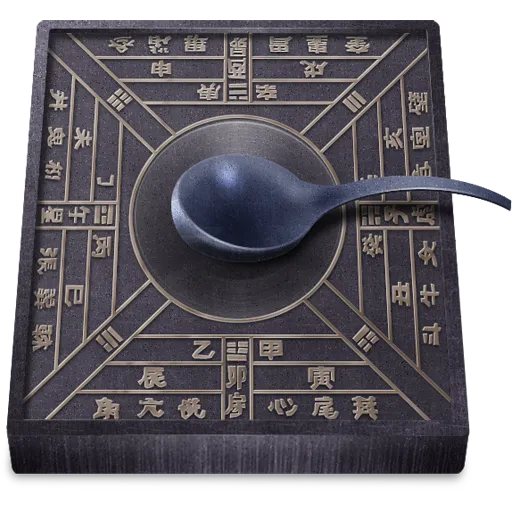

联系我们:100010（工作时间：24h） 在线客服（24h无人接待）
自创备案号：1234-56789 Chrome商店下载版权与免责声明版权申诉出版物许可证
| 主页 | 造纸术 | 印刷术 | 火药 | 指南针 |
|
指南针 |
指南针，古代叫司南，主要组成部分是一根装在轴上的磁针，磁针在天然地磁场的作用下可以自由转动并保持在磁子午线的切线方向上，磁针的南极指向地理南极(磁场北极)，利用这一性能可以辨别方向。
发展与历史 
最初的指南针是用天然磁石制成的，样子像一只勺，底部光滑，可以在平滑的铜质或木质的“地盘”上自由旋转，等它静止下来，勺柄就会指向南方。人们管它叫“司南”。
造纸方法
原理：磁极间的相互作用，同名磁极互相排斥，异名磁极互相吸引。 地球本身就是一个巨大的磁体，叫地磁体，地磁体的南极在地理的北极附近，地磁体的北极在地理的南极附近，因此地球上的小磁针静止时总是一端指南，一端指北。
|
联系我们:100010（工作时间：24h） 在线客服（24h无人接待）
自创备案号：1234-56789 Chrome商店下载版权与免责声明版权申诉出版物许可证